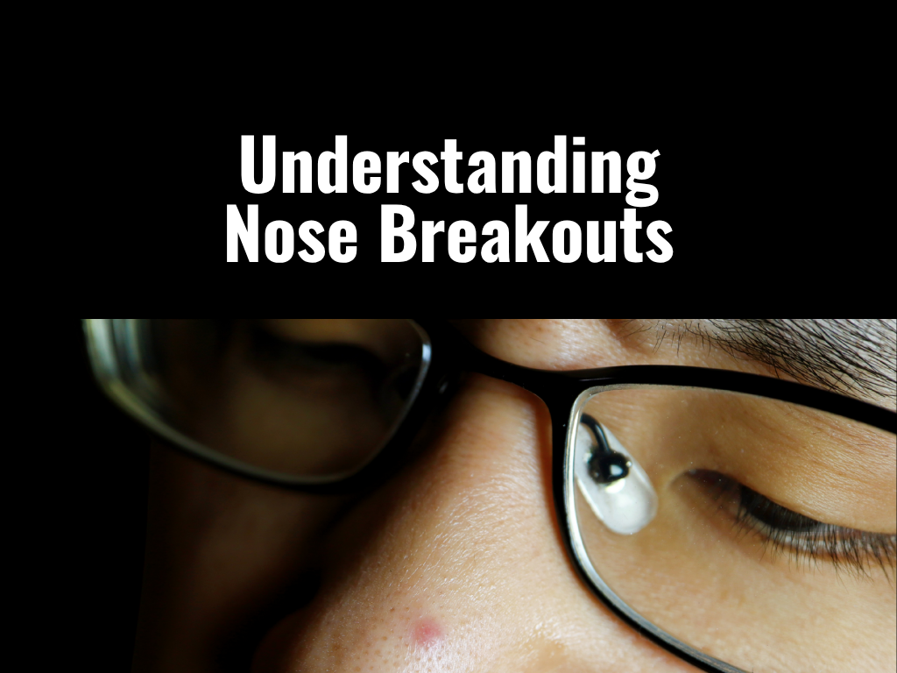

It always starts the same way.
A few small bumps on the sides of your nose. A little redness that won't go away. Then suddenly, it's not just one pimple. It's a pattern.
You treat it. It fades. It comes back.
And eventually you start wondering: why is it always the nose?
The answer is not random. It is structural.
The Nose Is Built to Break Out

The T-zone — forehead, nose, and chin — has a higher density of oil glands than the rest of the face.
The nose sits right in the middle of what dermatologists call the T-zone. That matters because it has more oil glands than most areas of your face, the pores are often larger, and it produces more sebum.
This combination makes it one of the easiest places for pores to clog and form acne. When oil mixes with dead skin cells and bacteria, it blocks pores and triggers inflammation. That is how you get blackheads, whiteheads, red bumps, and painful inflamed pimples.
So if your nose keeps breaking out, it is not bad luck. It is biology.
The 4 Real Reasons Your Nose Keeps Breaking Out
Reason 1
Oil Overproduction
Your nose produces more oil than almost anywhere else on your face. That oil is not the problem by itself. But when there is too much of it, it mixes with dead skin, clogs pores, and feeds acne-causing bacteria.
Result: blackheads, bumps, and inflammation. This is the number one reason nose acne is so common.
Reason 2
Dead Skin Buildup (Clogged Pores)
Skin sheds constantly. If that shedding process slows down or gets disrupted, dead cells build up and block pores. That leads to rough texture, small bumps, and clogged pores that turn into acne.
Dermatologists describe acne as a mix of oil + dead skin + bacteria trapped in pores. This is why people think they need to "exfoliate harder." But that leads to the next problem.
Reason 3
Cleansing Blind Spots

The folds on the sides of the nose are one of the easiest places to miss during cleansing.
The sides of the nose are one of the easiest places to clean badly. Common mistakes include leaving makeup and sunscreen in the folds, not rinsing properly, skipping oil cleansing, and rushing through the nose area.
That leftover residue mixes with oil and becomes a clog. Even dermatology guidance highlights that buildup of oil and debris is a key factor in nose acne formation.
Reason 4
Over-Cleansing and Barrier Damage
This is the part most people get wrong. When you see oil and acne, your instinct is to cleanse more, scrub more, and use stronger products. But over-cleansing does the opposite of what you want.
It damages the skin barrier, increases irritation, and can trigger even more oil production — which leads to more breakouts, not fewer.
clean → dry → irritated → oily → breakouts → clean harder → repeat
The Bigger Mistake: Treating Oil Like the Enemy
Most people think: "I have acne, so I need to remove oil."
But your skin is not trying to sabotage you. Oil is part of your barrier. The goal is not zero oil. The goal is balanced skin that doesn't clog easily.
How to Actually Fix Nose Breakouts
Fix 1
Clean Gently, Not Aggressively
Use a mild cleanser twice a day. Focus on the sides of your nose and folds where residue builds up. Dermatology guidance emphasizes balanced cleansing, not over-washing, because irritation can worsen acne.
- Non-stripping formula
- Fragrance-free if sensitive
- Optional salicylic acid if you have clogged pores
- Lukewarm water, fingertips only
Fix 2
Remove Makeup Properly

Double cleansing — oil cleanser first, then a gentle cleanser — removes sunscreen and makeup that water alone misses.
If you wear makeup or sunscreen, use an oil cleanser or balm first, then follow with a gentle cleanser. Leftover product is one of the easiest ways to clog pores around the nose.
Fix 3
Repair Your Skin Barrier
If your nose is red, irritated, sensitive, or breaking out repeatedly, you may not need stronger acne treatment. You may need less.
- Soothing ingredients like centella or niacinamide
- Barrier-supporting moisturizers with ceramides
- Fewer actives until skin calms down
Inflamed skin breaks out more easily. Repairing the barrier first often resolves breakouts that actives alone cannot fix.
Fix 4
Use Actives Strategically
Instead of layering everything, use targeted ingredients — but not all at once.
- Salicylic acid — unclogs pores (oil-soluble, penetrates sebum)
- Benzoyl peroxide — reduces acne-causing bacteria
- Retinoids — improve cell turnover and prevent clogging
- Niacinamide — reduces inflammation and regulates oil
Fix 5
Address Lifestyle Triggers
Breakouts can also be influenced by factors outside your skincare routine. Hormones and stress both affect oil production and acne severity.
- High sugar or high glycemic diet
- Stress (increases cortisol, which increases oil production)
- Poor sleep
- Touching your face constantly
- Phone screen contact with the nose area
Fix 6
Know When to See a Doctor
If your nose acne is persistent, painful, worsening, or not responding to basic care, it might not be simple acne. Conditions like rosacea can look similar but need different treatment entirely. A dermatologist can distinguish between acne, rosacea, sebaceous hyperplasia, and other conditions that affect the nose area.
What Not to Do
- 🚫 Do not squeeze nose pimples — the nose sits in a sensitive vascular area, and squeezing can push bacteria deeper or cause complications.
- 🚫 Do not over-exfoliate — more acids does not mean faster results.
- 🚫 Do not strip your skin — dry, irritated skin often produces more oil.
- 🚫 Do not chase every trend — most viral routines ignore skin barrier health.
The Bottom Line
Nose breakouts are not random. They happen because the nose is oilier, more exposed, and easier to clog than most of your face.
And most people treat it the wrong way. The real fix is not harsher skincare. It is smarter skincare: cleanse properly, avoid buildup, protect your barrier, use targeted treatment, and stop overcorrecting.
Because the goal is not to fight your skin. It is to stop making it work against you.